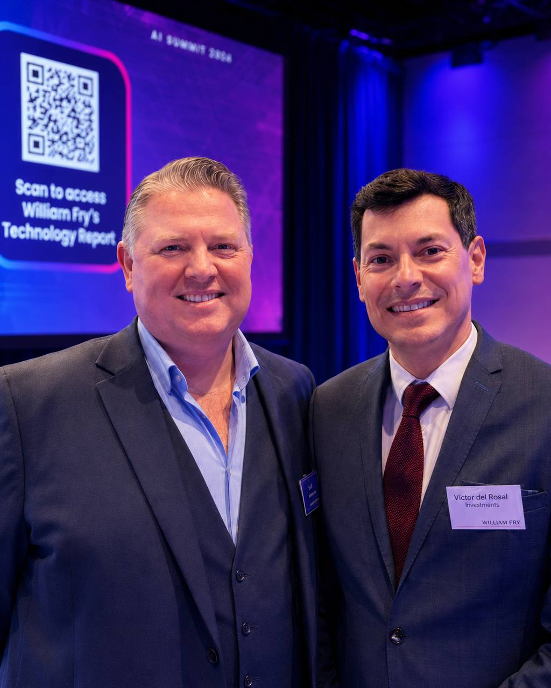

80%
of large Irish businesses have invested in AI
What the William Fry AI Summit 2026 means for Irish decision-makers

On 14 May 2026, William Fry's annual AI Summit brought senior executives, policymakers and legal specialists to Dublin. The mood was neither hype nor fear. It was a clear-eyed reckoning: Irish organisations have moved fast on AI, and the governance, the contracts and the workforce behind it have not yet caught up. What follows is the headline version. The full briefing, with sources and panel detail, is in the long read at the foot of this page.
Four in five large Irish businesses have invested in AI; roughly one in nine can point to a clear return. The binding constraint is no longer access to the technology. It is governance, contracts, workforce capability and workflow design.
On 7 May 2026, EU negotiators reached a provisional deal, the Digital Omnibus on AI, to push the AI Act's high-risk obligations from August 2026 to December 2027. It is agreed in principle, not yet law, and Ireland has signalled it will implement on the original schedule regardless.
The country is applying the AI Act through a distributed model: 15 designated national competent authorities under S.I. No. 366/2025, coordinated by a new statutory body, the AI Office of Ireland, whose first chief executive is still to be hired.
GDPR, the AI Act, DORA, NIS2 and the EU Data Act each carry their own obligations and their own incident-reporting clocks. The overlap, not any single instrument, is where the real compliance cost sits.
Bolting AI onto an unchanged process returns little. The summit's verdict: treat an AI system like a capable new employee, scope its access, supervise it, and get going. Not moving is not an option.
Decision-makers who treat AI as a risk-management discipline, not only an innovation programme, are the ones the summit identified as likely to win. The Central Bank of Ireland's read is blunt: many firms still treat AI as an innovation initiative rather than a risk-management issue.
The Digital Omnibus delays the high-risk obligations, but the February 2025 prohibitions and AI literacy duty, and the August 2025 general-purpose-AI rules, are unchanged. Plan for the original discipline; do not bank on the delay.
The summit ran four panels, moving from the regulator's desk to the boardroom table to the procurement contract to the geopolitics of AI in Europe.
Panel rosters are reconstructed from the delegate's notes and the summit slides, then cross-checked against William Fry's published material and each organisation's own bios. The Microsoft Ireland seat on the procurement panel has not yet been confirmed by name. Full roles, sources, and notes on what could and could not be independently verified, are in the long read at Appendix A.
Irish organisations already have access to AI. What separates the ones that will pull ahead is whether they build the surrounding capability: governed systems, sound contracts, trained people, and workflows redesigned rather than merely sped up. Regulation, on this reading, is not the obstacle to that capability. It is a forcing function for it.
The gap on display at the summit was not one of capability. It was one of readiness.
Ireland sits among Europe's leading destinations for artificial intelligence investment. IDA Ireland approved a record 323 investments in 2025, up 38 percent on the prior year, with the potential to create 15,300 new jobs, and its clients committed a record 2.5 billion euro in future research, development and innovation spending, much of it tied to AI.1 The Irish government's own assessment is that the country hosts eight of the leading providers of foundation AI models.2 Adoption inside Irish organisations is broad: the third William Fry Technology Report, launched at the summit, found that 80 percent of large Irish businesses have invested in AI.3
The same report exposes the readiness gap. Only 11 percent of those businesses report a clearly positive return on that investment, and 81 percent now rank legal and regulatory compliance as their single biggest consideration when adopting AI.3 The Central Bank of Ireland's read is blunter still: many firms continue to treat AI as an innovation initiative rather than a risk-management issue.4 Across the day, the summit's panels returned to the same four levers that separate the organisations that will pull ahead from those that will stall: the contracts, the people, the workflows, and the governance.
Two developments give this briefing its urgency. The first is structural: Ireland is standing up an entirely new regulatory architecture for AI, built on a distributed network of sectoral regulators coordinated by a new statutory body, the AI Office of Ireland, whose first chief executive is still to be hired. The second is that the compliance timeline moved under delegates' feet. One week before the summit, on 7 May 2026, EU negotiators reached a provisional deal to delay the AI Act's high-risk obligations into late 2027. The detail of both is below.
Four in five large Irish businesses have invested in AI; roughly one in nine can point to a positive return. The binding constraint is no longer access to the technology. It is governance, contracting, workforce capability and workflow design. Decision-makers who treat AI as a risk-management discipline, not only an innovation programme, are the ones the summit identified as likely to win.
On 7 May 2026, the European Parliament and Council reached a provisional agreement on the "Digital Omnibus on AI", pushing the AI Act's high-risk obligations for Annex III systems from August 2026 to December 2027. The deal is agreed in principle but not yet adopted into law. Ireland has signalled it will press ahead with national implementation regardless. Plan for the original discipline; do not bank on the delay.
The summit opened from a position of strength. Ireland is, on the evidence, a leading European location for AI investment. IDA Ireland recorded 323 approved investments in 2025, a 38 percent increase year on year, with the potential to create 15,300 new jobs, and reported record future research and development commitments of 2.5 billion euro from its client base, explicitly linked to emerging technologies including AI.1 The agency's 2025 to 2029 strategy, "Adapt Intelligently", names AI and digitalisation as the first of its four growth drivers.7 The Irish state's own briefing to the Oireachtas describes Ireland as host to eight of the leading providers of foundation AI models.2
Inside Irish organisations, adoption is wide. The third William Fry Technology Report, launched at the summit and offering a ten-year view across survey years 2016, 2021 and 2026, found that 80 percent of large Irish businesses have invested in AI.3 That is the adoption story. The readiness story is harder. Only 11 percent of those businesses report a clearly positive return on the investment, and 81 percent now place legal and regulatory compliance at the top of their list of adoption considerations.3
Delegates' notes record a recurring frame across the day: a readiness gap that widens as one moves from today's systems to more capable ones. The point is not that Irish firms lack access to AI. It is that the organisational scaffolding around it, the governance, the contracts, the assurance, the trained people, has not kept pace. The Central Bank of Ireland made the same observation from the supervisory side: in its view, many regulated firms still treat AI primarily as an innovation initiative rather than a risk-management issue.4
The summit's answer was not caution for its own sake. Several panels were emphatic that paralysis is itself a strategy, and a losing one. A firm can become so anxious about regulation that it stops moving; not moving, the floor agreed, is not an option. The better mental model offered on the day: treat an AI system like a capable new employee. You do not hand a new hire the keys to every system on day one. You scope their access, you supervise, and you get going.
"It's a Kodak moment."
The Kodak reference ran through more than one session: the risk to incumbents is not that AI is unavailable to them, but that they recognise its significance and still fail to reorganise around it in time. The organisations the summit identified as likely to win were described in plain terms: the ones that get their contracts right and their people ready. On that reading, Ireland's status as a country of choice for AI investment is an opening, not a result. It is held only by organisations that convert adoption into governed, returning capability.
The summit's regulation panel, moderated by William Fry technology partner Rachel Hayes, brought together the public bodies that will define how the EU AI Act is felt in Ireland: Jean Carberry of the Department of Enterprise, Tourism and Employment, which leads national implementation; Dale Sunderland, Commissioner for Data Protection; and Trevor Fitzpatrick of the Central Bank of Ireland. Full roles are listed at Appendix A.
Ireland has decided, through a series of government decisions in 2024 and 2025, to apply the AI Act through a distributed model.5 Rather than create one new super-regulator, Ireland is using its existing sectoral regulators and placing a central coordinating authority on top of them. Under S.I. No. 366/2025 (European Union (Artificial Intelligence) (Designation) Regulations 2025), announced by DETE on 16 September 2025, 15 national competent authorities have been designated: 13 acting as market-surveillance authorities and four as notifying authorities, with some bodies holding both roles and further designations still possible.5 The designated bodies include the Central Bank of Ireland, the Data Protection Commission, Coimisiún na Meán, ComReg, the Competition and Consumer Protection Commission, the Health and Safety Authority, the Health Products Regulatory Authority and the Workplace Relations Commission, among others.5
At the centre of that network sits a new body. The AI Office of Ireland, in Irish Oifig Intleachta Shaorga na hÉireann, will be a statutory independent body under the remit of the Department of Enterprise, Tourism and Employment.5 Its job is coordination, not front-line enforcement. It will act as the single point of contact between Ireland and the European Commission and other Member States, coordinate the activity of the sectoral regulators, host a centralised pool of technical expertise, drive national AI literacy, and deliver Ireland's AI regulatory sandbox.5 Investigations, surveillance and sanctions remain with the sectoral authorities; because the single-point-of-contact role legally requires market-surveillance-authority status, the AI Office is itself constituted as one, but it is a coordinator rather than the enforcer.5
The governance is taking shape. The legislative vehicle is the General Scheme of the Regulation of Artificial Intelligence Bill 2026, for which the Government approved priority drafting on 13 January 2026 and which DETE published on 4 February 2026.5 The Office is to be run on a chief executive and board model, with a board of seven, with funding secured in Budget 2026 to establish it, and is targeted to be operational by 2 August 2026, with initial senior staff including the chief executive to be in place in 2026.5 The Irish penalties mirror the AI Act itself: up to 35 million euro or 7 percent of worldwide turnover for breaches of the prohibited-practices rules.5 Delegates' notes capture the practical reading on the day: the AI Office is meant to be the single door, and its chief executive is still to be hired.
The European AI Office, inside the European Commission in Brussels, has exclusive EU-level competence to supervise and enforce the obligations on providers of general-purpose AI models. It polices the foundation-model layer across the Union.8
The AI Office of Ireland, in Dublin, is a national coordinator. It does not police foundation models; it coordinates Ireland's distributed network of sectoral regulators and is the country's single point of contact with the EU.5 When a delegate hears "the AI Office", the question to ask is: Brussels, or Dublin?
Two of the designated regulators are already shaping how AI is built and used in Ireland. The Data Protection Commission has pursued an "ex ante" approach, engaging with large technology firms before AI training begins rather than relying only on enforcement afterwards. Its engagements with Meta over training large language models on public Facebook and Instagram content, and its use, for the first time, of an urgent High Court application under Section 134 of the Data Protection Act 2018 to halt X's processing of EU and EEA user data to train Grok, have made Dublin the de facto European front line for AI-training data-protection questions, because so many of these firms have their EU establishment in Ireland.9 The Commission's separate statutory inquiries into X over Grok, including a 2026 inquiry into the "nudification" of images, continue.9
The Central Bank of Ireland is the designated authority for AI in financial services and has named AI as one of its core supervisory priorities for 2026, alongside operational resilience and consumer protection, with a focus on governance, explainability and model-risk management for automated financial decisions.4 The AI Act itself treats parts of financial-services AI as high-risk, notably AI used to assess the creditworthiness of individuals and AI used in risk assessment and pricing for life and health insurance.10
A sharper, more technical thread ran under the regulation panel. The AI Act is built on a defined notion of an "AI system". That definition was drafted with a fairly stable picture of software in mind. Delegates' notes capture the strain that agentic AI puts on it, in a memorable image: an octopus that does not fit in the box. As the field moves from classical, rule-based AI through generative models to agentic systems that plan, call tools and act over extended horizons, the tidy categories of the Act become harder to apply cleanly. The related concern raised on the day was an "evaluation gap": the rate at which model and agent capabilities are improving, particularly in areas like coding, is outpacing the capacity of regulators to assess them. Neither point is an argument against regulation. Both are arguments for regulators, and regulated firms, to build genuine technical evaluation capacity, which is precisely what the AI Office's centralised expertise pool is meant to address.
Any summit discussion of the AI Act timeline in May 2026 came with a live caveat, because the timeline was being rewritten in the same week. On 7 May 2026, one week before the summit, negotiators for the European Parliament and the Council reached a provisional agreement on the "Digital Omnibus on AI", a targeted set of amendments to the AI Act.6
The AI Act, Regulation (EU) 2024/1689, entered into force on 1 August 2024 and was designed to apply in stages.11 The ban on prohibited AI practices, and the AI literacy obligation, took effect on 2 February 2025.11 Obligations for general-purpose AI models, the governance provisions and the penalties chapter applied from 2 August 2025, the same date by which Member States were to designate their national competent authorities.11 The bulk of the remaining obligations, including the rules for high-risk systems listed in Annex III, were due to apply from 2 August 2026, with a further tranche for high-risk AI embedded in regulated products following on 2 August 2027.11
The Digital Omnibus, first published by the European Commission on 19 November 2025 as part of a wider simplification agenda, and provisionally agreed on 7 May 2026, moves several of those dates.6,12 On the strength of multiple independent legal analyses of the provisional deal:
| Obligation | Original date | Proposed new position |
|---|---|---|
| High-risk AI systems listed in Annex III (biometrics, critical infrastructure, employment, education, law enforcement and similar) | 2 August 2026 | Moved to 2 December 20276 |
| High-risk AI embedded in products regulated under EU sectoral law (Annex I: medical devices, machinery, toys, lifts) | 2 August 2027 | Moved to 2 August 20286 |
| Start of high-risk obligations generally | Fixed calendar date | Now tied to the availability of harmonised standards and support tools6 |
| New prohibition on AI generating non-consensual intimate imagery and child sexual abuse material | Not in original text | Compliance required by 2 December 20266 |
| Transparency and AI-content marking obligations | Six-month grace period | Grace period set at four months (Commission proposed six, Parliament three); compliance by 2 December 20266 |
Two points matter for planning. First, what does not change: the February 2025 prohibitions and the August 2025 general-purpose-AI obligations remain in force as originally dated.6 The AI literacy obligation has applied since February 2025 and is not deferred. Second, the deal is provisional. It still requires formal endorsement by the Council and Parliament, legal-linguistic revision, and publication in the Official Journal before it is law.6 It should be treated as agreed in principle, not as settled law.
The wider package also includes a broader Digital Omnibus touching the interaction of GDPR, the Data Act, the ePrivacy rules and cybersecurity law, and sits alongside a deeper "Digital Fitness Check", a stress test of the entire EU digital rulebook, whose stakeholder consultation ran to March 2026.12 The summit's shorthand of an "AI Act Simplification Act" and "fitness checks of regulatory frameworks" maps onto these two instruments: the Omnibus is the near-term simplification vehicle; the fitness check is the longer diagnostic that may feed future reform.
Ireland's own position, set out in its briefing to the Oireachtas, is that nothing in the Omnibus package requires a delay in Ireland's national implementation programme, and that it remains vitally important for Ireland to keep moving without delay.5 The extra EU-level time is being framed in Dublin as room for quality implementation, not as permission to postpone preparatory work. An Irish organisation that stands down its AI governance programme on the strength of a Brussels delay will find the national machinery, and its own customers and boards, moving on the original schedule.
A theme that recurred across the summit, and one delegates' notes return to repeatedly, is regulatory overlap. The AI Act does not arrive on a clean desk. It lands on top of a stack of EU instruments that already govern data, security and operational resilience, and the seams between them are where the real compliance cost sits.
| Instrument | What it governs | Status | How it touches AI |
|---|---|---|---|
| GDPR | Processing of personal data | Applicable since May 2018 | Training data, lawful basis, and automated decision-making. The DPC's Meta and Grok engagements are GDPR enforcement.9 |
| EU AI Act | AI systems and general-purpose AI models, on a risk basis | In force Aug 2024; phased to 2026 and 2027, with high-risk obligations now proposed to move to Dec 20276,11 | The core instrument: classification, high-risk obligations, transparency, prohibited practices. |
| DORA | Digital operational resilience for financial entities: ICT risk, incident reporting, third-party risk | Applicable since 17 January 202513 | AI tools used by financial firms fall inside DORA's ICT-risk and third-party-provider scope. |
| NIS2 | Cybersecurity risk management and incident reporting for essential and important entities | EU transposition deadline 17 October 2024; Irish transposition incomplete as of May 2026, with Ireland subject to Commission infringement proceedings opened 28 November 202414 | AI systems are part of the network and information estate that must be secured and whose incidents must be reported. |
| EU Data Act | Access to and sharing of data from connected products; cloud switching and interoperability | Core provisions applicable since 12 September 202515 | Governs access to the machine-generated data that feeds AI systems, and the ability to switch cloud providers for AI workloads. |
The friction is concrete. Incident reporting is the clearest example: NIS2 can require an initial early warning within 24 hours of becoming aware of a significant incident; DORA, through Commission Delegated Regulation (EU) 2025/301, requires an initial notification within 4 hours of classifying an incident as major and in any case within 24 hours of becoming aware; the AI Act sets tiered windows for serious incidents under Article 73, with a 15-day default from awareness, tightening to 10 days where a person has died and 2 days for widespread infringement or serious critical-infrastructure disruption; and GDPR runs its own separate 72-hour clock for personal-data breaches.16 A single incident involving an AI system at a financial firm can trigger four reporting obligations on four different clocks to four different authorities. There is also a structural tension between GDPR's data-minimisation principle and the data appetite of modern AI systems.16
The EU's own response to this overlap is, in part, the Digital Omnibus described in Section III, together with a planned single entry point intended to route incident and breach notifications across several of these regimes and cut duplicate reporting.16 For an Irish decision-maker, the practical implication is to stop treating these as five separate compliance projects. The economical move is one mapped AI estate, one risk register, and one incident process built to satisfy the strictest applicable clock.
The summit's C-Suite panel, drawing on senior voices from Microsoft, IBM, Teneo and StoryToys, moved the discussion from the regulator's desk to the boardroom table. Its central message was that AI has become a boardroom conversation, not a technology-function conversation, and that the framing of that conversation determines whether the investment returns anything.
The panel's sharpest point, and the one most directly tied to the 11 percent positive-return figure, was that productivity gains from bolting AI onto an unchanged process are real but shallow. The deeper return comes from redesigning the workflow itself. The questions the panel pressed boards to ask were uncomfortable and specific: where is the fat in this process, what can be trimmed, and what would this workflow look like if it were designed today, with these tools, from scratch. An organisation that only asks AI to make the existing process faster has, in effect, paved a cow path.
Two pressures were named as bearing down on directors. The first is the pressure to show a return on investment, which the Technology Report's figures make tangible: heavy adoption, thin demonstrated return.3 The second is reputational risk, the exposure that comes from an AI system that behaves badly in public, mishandles data, or makes a decision the organisation cannot explain. The panel's framing was that these two pressures are not in tension. The same disciplines that reduce reputational risk, scoping, supervision, evaluation and governance, are the disciplines that turn adoption into return.
"AI is like a new employee. You don't give access to all areas. You scope it, you supervise, and you get going."
The "new employee" model recurred because it resolves the paralysis problem. It gives a board a way to act that is neither reckless nor frozen: onboard the capability, grant it scoped access, supervise it, review it, and expand its remit as trust is earned. Not moving, the panel agreed, is not an option. But moving without scope is how reputational risk is manufactured.
The summit's procurement panel, "Procuring AI from Concept to Contract", was deliberately practical, drawing on a vendor perspective from Microsoft and Google, a buyer and legal perspective from Bank of Ireland, and an enterprise perspective associated with Diageo. Participants and roles are at Appendix A.
The panel's opening discipline was to start procurement from the business outcome, not the technology. The recommended path was to express the need as user stories, the concrete "as a [role], I want [outcome]" statements familiar from agile delivery, and to run delivery through a Scrum-style iterative process rather than a single large specification handed to a vendor. The effect is to keep the contract anchored to outcomes the business actually wants, and to make it possible to test, learn and adjust before committing at scale.
A pointed exchange on the panel was a question put to Google's representative, David Sneddon: are the technology vendors training the workforce enough? It is the right question to carry into any procurement conversation. The cost of an AI deployment is not only licence and integration. It is the capability of the people who will use it, supervise it and be accountable for it. A procurement that secures the tool but not the training has bought half of what it needs.
This closes the loop with the summit's opening theme. The organisations identified as likely to win were the ones with their contracts right and their people ready. Section VI is where those two are bought: the contract is the instrument that gets the outcome and the risk allocation right; the procurement process is also where workforce capability either gets funded or quietly gets dropped.
Drawn together from across the summit's panels, with the regulatory position as it stood in mid-May 2026.
The summit's evidence is that Irish organisations already have access to AI. What separates the organisations that will pull ahead is whether they build the surrounding capability: governed systems, sound contracts, trained people, and workflows redesigned rather than merely sped up. Regulation, on this reading, is not the obstacle to that capability. It is a forcing function for it.
Panel compositions are reconstructed from a delegate's contemporaneous notes, the summit slides, and William Fry's published material. Individual roles below have been independently verified against each organisation's own bios and reputable secondary sources. The 19 May 2026 verification pass recovered the C-suite roster and the procurement-panel moderator, both of which were anonymised in the original notes. Items that could not be fully verified are flagged, with detail at Appendix C.
Panel 4 was documented from a photograph of the summit slide. Its topic and participants are well-evidenced, but its substantive discussion is not captured in this briefing.
As at mid-May 2026. Dates marked "proposed" reflect the provisional Digital Omnibus on AI agreement of 7 May 2026, which is agreed in principle but not yet adopted into law.
| Date | Milestone |
|---|---|
| 1 August 2024 | The AI Act, Regulation (EU) 2024/1689, enters into force.11 |
| 2 February 2025 | Ban on prohibited AI practices takes effect. AI literacy obligation (Article 4) applies. Not deferred by the Digital Omnibus.11 |
| 2 August 2025 | Obligations for general-purpose AI models, the governance provisions and the penalties chapter apply. Member States to have designated national competent authorities.11 |
| 2 December 2026 (proposed) | Proposed compliance date for the new prohibition on AI generating non-consensual intimate imagery and child sexual abuse material, and for the transparency and AI-content marking obligations.6 |
| 2 December 2027 (proposed) | Proposed new application date for high-risk AI systems listed in Annex III, moved from 2 August 2026, with the start now tied to the availability of harmonised standards and support tools.6 |
| 2 August 2028 (proposed) | Proposed new application date for high-risk AI embedded in products regulated under EU sectoral law (Annex I), moved from 2 August 2027.6 |
| 2 August 2030 | Public-authority deployers of certain high-risk AI systems already in use must reach compliance (Article 111).11 |
| 31 December 2030 | AI components of Annex X large-scale IT systems placed on the market before 2 August 2027 must reach compliance (Article 111).11 |
Note on the original notes: the delegate's notes recorded an "August 2026 enforcement of prohibited practices" milestone. For accuracy: the prohibited practices have been enforceable since 2 February 2025. August 2026 was the original date on which the enforcement machinery and the high-risk obligations were due to take full effect; that high-risk date is the one now proposed to move to December 2027.
This briefing was compiled from a delegate's contemporaneous handwritten notes taken at the William Fry AI Summit 2026, then cross-checked against primary sources (EU institutions, Irish government and the Oireachtas, the Data Protection Commission, IDA Ireland) and reputable secondary sources (established law firms and national media). Personal, speculative and unrelated material in the original notes has been excluded by design; this document reports only the summit's substantive content and the verified context around it.
Source titles and publishers are given so that any reader can locate and check them. Where a primary EU or Irish government page was temporarily inaccessible during research, the underlying fact was corroborated through at least one independent source.